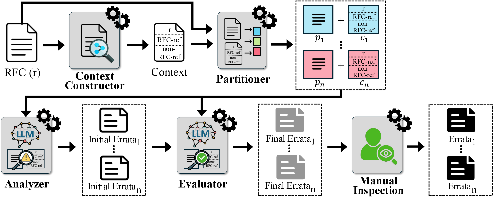
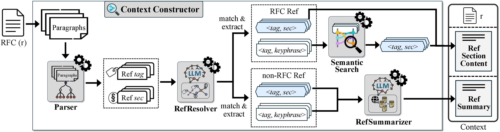
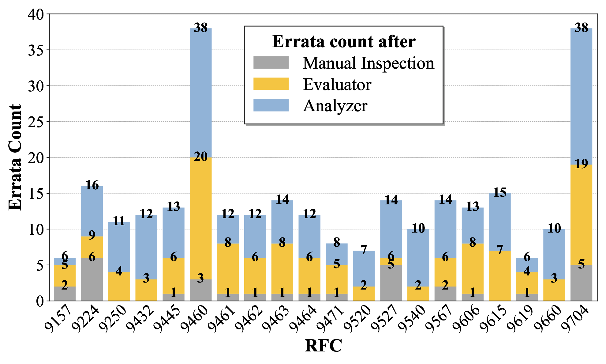
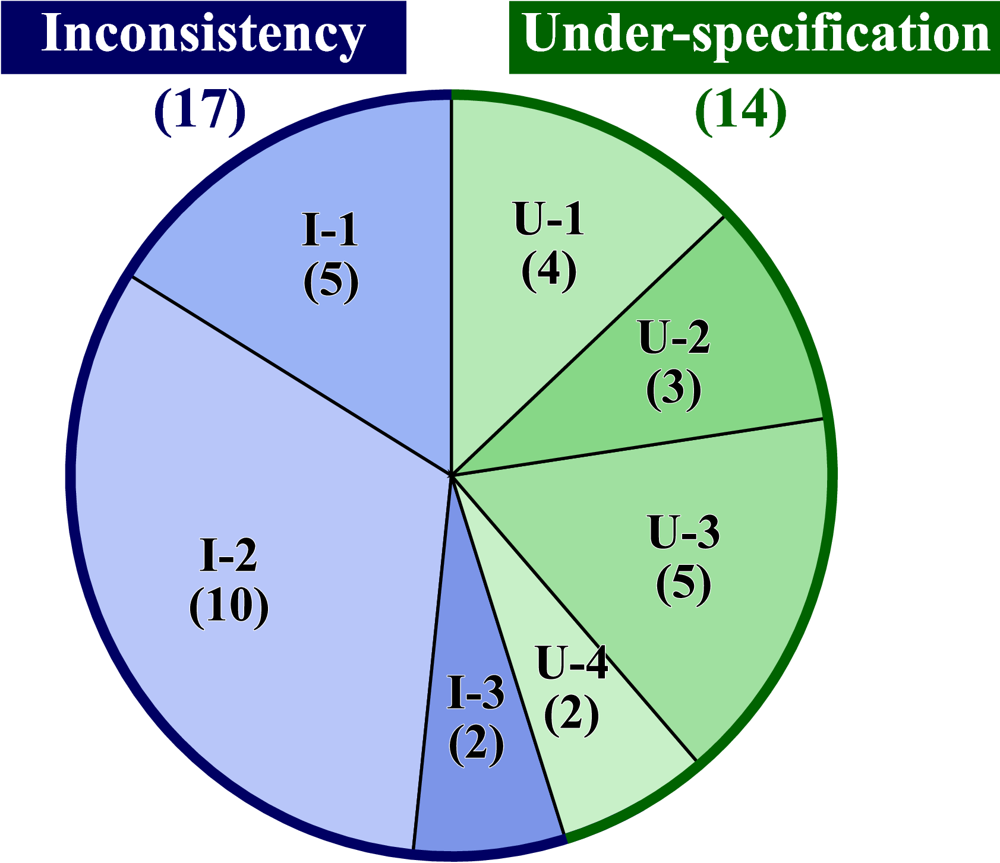

Why does this matter?
Internet protocol specifications, published as Requests for Comments (RFCs) by the IETF, are essential to ensuring the interoperability, security, and reliability of the Internet. However, ambiguities in these specifications — particularly logical ambiguities such as inconsistencies and under-specifications — can lead to critical misinterpretations and implementation errors. Unfortunately, such ambiguities remain largely overlooked and challenging to detect with existing tools.
🤖 Why LLMs are a promising fit
LLMs can read and reason over heterogeneous formats like natural language, formal notations, pseudocode, diagrams, or tables that are present in RFCs. They can also combine information from different sources and can apply common networking knowledge. This makes them well-suited for detecting logical ambiguities in RFCs.
⚠️ Challenges of applying LLMs
- Not only are RFCs often lengthy, their analysis requires reasoning across multiple interrelated documents. These can easily exceed the context window of LLMs.
- LLMs lack specialized domain knowledge about logical ambiguities in Internet protocols.
- LLMs are prone to hallucinating plausible but incorrect conclusions.
📌 Our contributions
Empirical Study — the first systematic taxonomy of logical ambiguities from 273 verified technical errata from Standards Track RFCs.
Framework — RFCScope, the first scalable framework for detecting logical ambiguities in RFCs.
Real-world Impact — 31 new ambiguities found, 8 confirmed by RFC authors, 3 officially verified as RFC errata.
A taxonomy of logical ambiguities
Through manual analysis of 273 verified technical errata from Standards Track RFCs (Jan 2014 – Jan 2025), we identified seven fine-grained subtypes of logical ambiguities in Standards Track RFCs.
| Category | ID | Description | Count |
|---|---|---|---|
| Inconsistency (202 total) |
I-1 | Direct inconsistency within or across specifications | 119 |
| I-2 | Indirect inconsistency within or across specifications | 70 | |
| I-3 | Inconsistency with commonly accepted knowledge | 13 | |
| Under-specification (37 total) |
U-1 | Direct under-specification due to undefined terms | 7 |
| U-2 | Incomplete constraints (requires implementation feedback) | 15 | |
| U-3 | Indirect under-specification within or across specifications | 10 | |
| U-4 | Incorrect or missing references | 5 |
How RFCScope works
RFCScope is a four-stage LLM pipeline. Given an RFC, the Context Constructor builds cross-document context by retrieving relevant content from all referenced documents. The Partitioner then splits the RFC and its context into self-contained segments. For each segment, the Analyzer identifies potential ambiguities and produces candidate errata reports. Finally, the Evaluator filters out false positives, and the remaining reports undergo a manual review.

Context Constructor
Processes the RFC paragraph-by-paragraph to identify all references to other documents and retrieve the relevant content from those documents. For RFC references with a specific section number, it retrieves that section directly. For references without a section number, it uses semantic search to find the most relevant section. For non-RFC documents, it summarizes the referenced content.
Partitioner
Splits the RFC and its associated context into self-contained segments that each fit within the LLM's context window. Segments are constructed dynamically to maximize the amount of relevant context included in each one, minimizing the number of LLM invocations during analysis.
Analyzer
Processes one segment at a time, prompting an LLM to identify logical ambiguities within the segment. The fine-grained taxonomy of ambiguity subtypes guides the LLM with definitions, detection strategies, and real illustrative examples drawn from the errata study. The Analyzer produces a candidate report for each detected ambiguity.
Evaluator
An LLM-based judge that validates each candidate report by independently reconstructing the analysis and checking it against a checklist of criteria — whether the issue is mentioned elsewhere, intentionally left to the implementer's discretion, or even relevant to the document. Reports that fail are filtered out as false positives.

Results
We evaluated RFCScope on 20 recent DNS-related Proposed Standard RFCs, discovering 31 previously unreported ambiguities across 14 of these RFCs.


Officially verified errata
Three of RFCScope's findings have been submitted to the RFC Editor Errata Portal and officially verified as technical errata.
Section 5 (Spec 1): ...replies with an Access-Accept message (possibly after having sent a RADIUS Access-Challenge message)... Section 7, Table of Attributes (Spec 2): | Access-Request | ... | Challenge | ...
Section 1, Introduction: ...clarify the allowable values of the QDCOUNT parameter in the specific case of DNS messages with OPCODE = 0.
RFC 9704, Section 6.2 (Spec 1): The client performs full DNSSEC validation locally [RFC6698]. RFC 6698, Section 1.3 (Spec 2, referenced doc): This document does not specify how DNSSEC validation occurs...
What's in the repository
All data, prompts, and code are publicly available to support reproducibility and future research.
studied-errata/
273 manually categorized errata from Standards Track RFCs (2014–2025), organized by all 7 subtypes.
detected-bugs/
31 new ambiguity findings across 14 RFCs, each with a bug report, category, and confirmation status.
prompts/
System and user prompt templates for the Analyzer and Evaluator, for both inconsistency and under-specification detection.
RFCScope/
Full implementation of the RFCScope tool. See the README inside for setup and usage instructions.
Cite this work
If you use RFCScope or our errata dataset in your research, please cite as follows.
@inproceedings{rfcscope,
author={Pawagi, Mrigank and Shao, Lize and Lee, Hyeonmin and Sun, Yixin and Wang, Wenxi},
booktitle={2025 40th IEEE/ACM International Conference on Automated Software Engineering (ASE)},
title={RFCScope: Detecting Logical Ambiguities in Internet Protocol Specifications},
year={2025},
doi={10.1109/ASE63991.2025.00106}
}